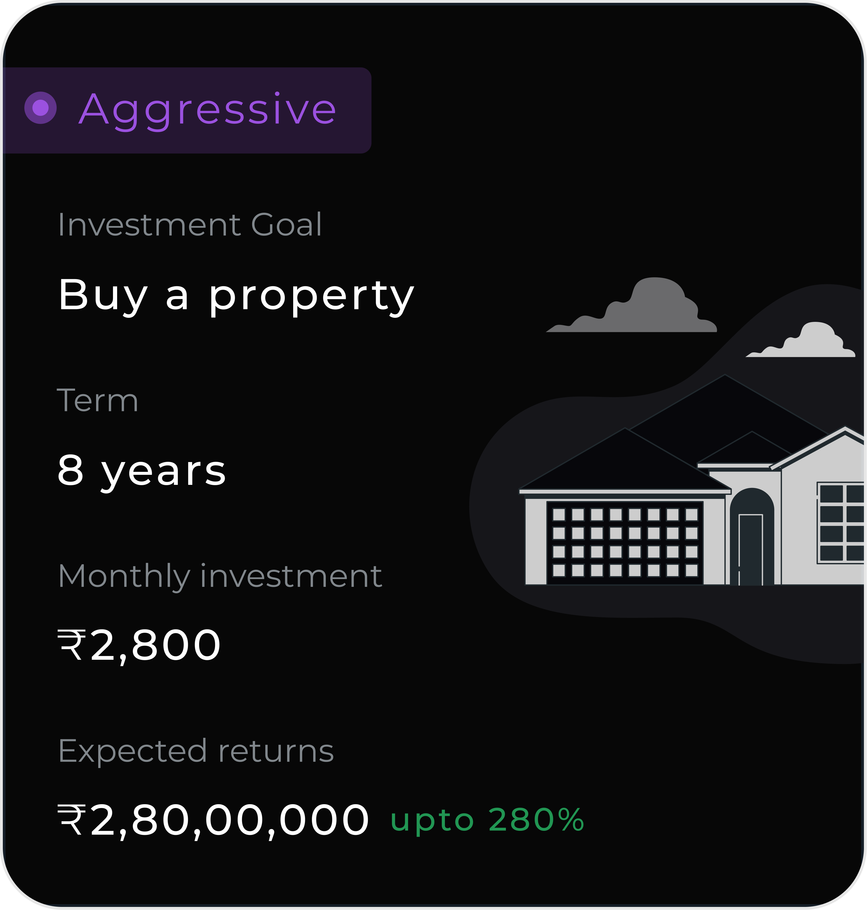
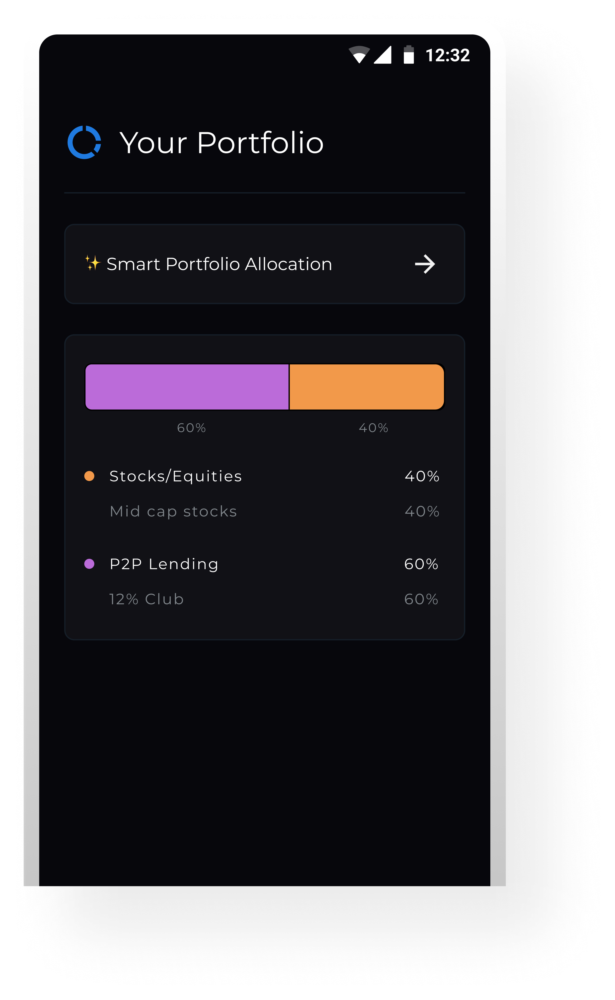
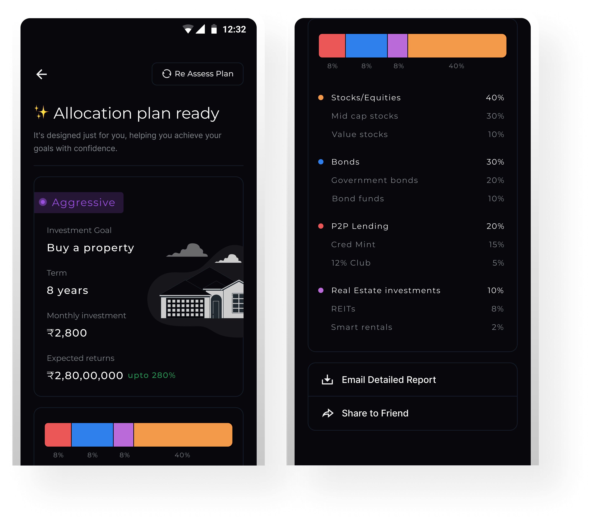
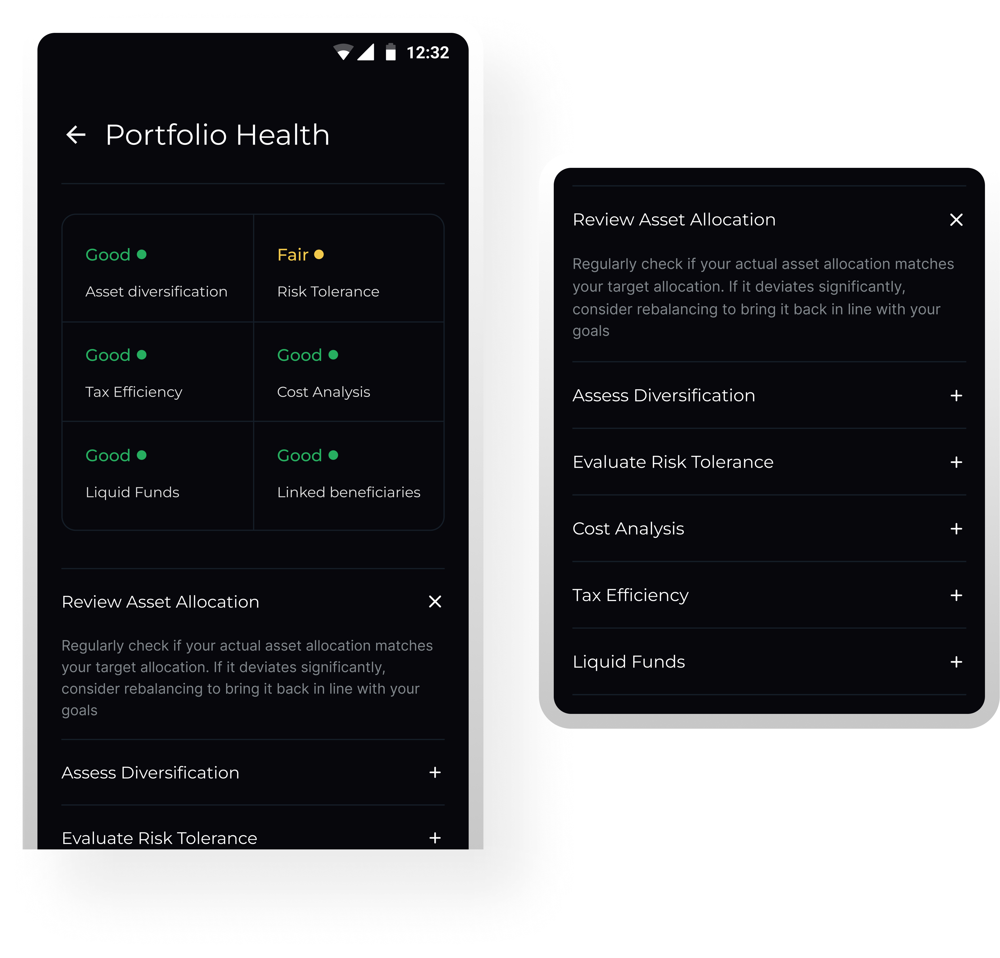
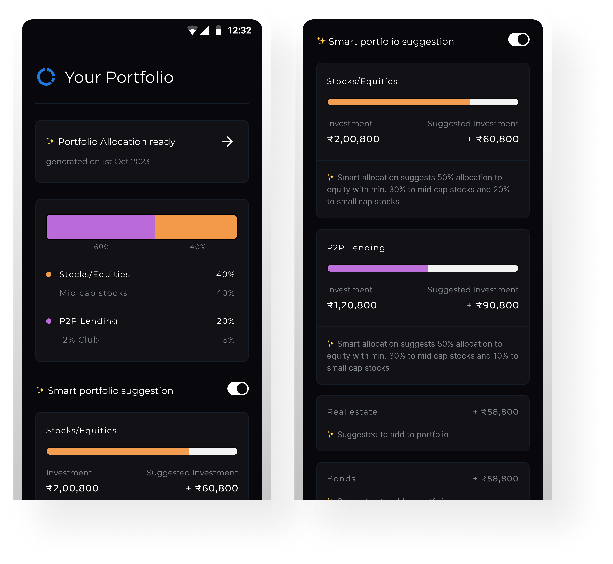
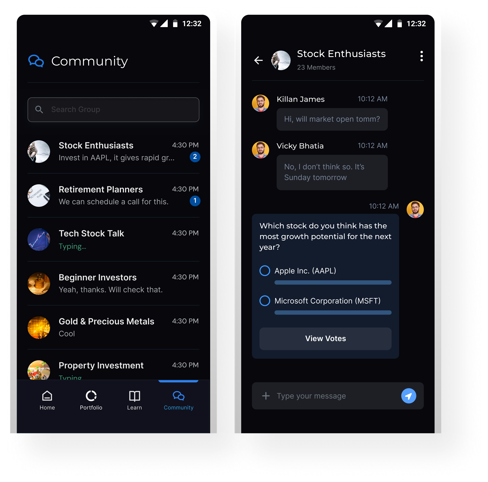

Clear Direction Over Choice
Users don’t want more options — they want to know what to do next, without feeling overwhelmed or needing expertise.
Personal project / Investing UX
Helping emerging investors move from confusion to confident decisions through structured guidance, contextual learning, and clearer portfolio understanding.

Overview
Investing for the first time is less about lack of options and more about lack of clarity. Most platforms assume users already understand what they’re doing, which often leads to hesitation, overthinking, or random decisions.
This project explores how a product can guide beginners through that uncertainty by structuring the journey into simpler steps, adding context where it actually helps, and making each decision feel more understandable — not overwhelming.
Problem statement
First-time investors aren’t short on options — they’re short on clarity. Most investment platforms assume users already understand the landscape, leaving beginners to navigate complex terms, compare products, and make decisions without real context.
What’s missing isn’t access — it’s guidance. There’s little support in helping users understand why a choice works, what it means for them, or how to move forward with confidence. As a result, decisions feel uncertain, success feels accidental, and trust shifts to peers instead of the platform itself.
What users needed beyond features
Users don’t want more options — they want to know what to do next, without feeling overwhelmed or needing expertise.
Investments should align with individual goals and risk comfort, not feel like one-size-fits-all recommendations.
A clear journey with small steps and visible milestones helps users stay confident and in control.
Before investing, users look for reassurance — signals that help them trust their decisions.
These needs shaped how the system was designed.
Solution
Instead of asking users to pick investments upfront, the flow starts with intent. Users define what they’re investing for, and the system translates that into a structured path forward.
From there, portfolio creation becomes a guided process — where allocation, risk, and recommendations are introduced step by step, with enough context to understand what’s happening without feeling overwhelmed.
Once set up, the experience doesn’t stop at “you’re done.” Through portfolio health, smart suggestions, and ongoing signals, users can track how they’re doing, understand what needs attention, and make better decisions over time.
Learning and community are layered into the journey — so users don’t just act, but also build confidence through understanding and validation.
From setting a goal to knowing what to do next: every step is guided.

Design
This screen offers users a quick overview of their portfolio allocation in a visually intuitive way. The horizontal bar graph simplifies fund distribution, making it easy to grasp proportions at a glance. Labels like “Mid cap stocks” and “12% Club” provide context without clutter.
A clear CTA—“Smart Portfolio Allocation”—invites users to explore deeper planning options without overwhelming the default view. Designed mobile-first, this layout balances clarity, control, and progressive engagement.

This screen is part of a lightweight, goal-based onboarding flow designed to create a personalized investment strategy. Instead of asking for technical financial preferences, we focus on intuitive, human-centered questions—like investment goals, timeline, and comfort with market fluctuations.
The layout is minimal and mobile-friendly, with one question per screen to reduce friction and cognitive load. This structure creates a guided experience that builds user trust while setting the foundation for smart portfolio recommendations.

This screen presents a tailored investment plan based on the user’s inputs. It highlights the selected goal, time horizon, monthly contribution, and projected returns in a clear, goal-driven layout.
A visual tag indicates the recommended risk profile (e.g., Aggressive, Moderate), while the allocation bar offers a quick breakdown of asset classes. The detailed list below provides transparency into sub-categories without overwhelming the user.
Actionable options like “Email Report” and “Share to Friend” are designed to drive re-engagement and reinforce user confidence. The overall experience is built to feel personal, trustworthy, and easy to act on.

This screen allows users to assess their portfolio across key financial wellness parameters like asset diversification, risk tolerance, and tax efficiency. These metrics were curated through secondary research, including references via ChatGPT, to align with commonly used industry evaluation frameworks.
We defined a simple 3-level scoring model to keep feedback
digestible:
🟢 Good – Strong performance, no action needed
🟡 Fair – Acceptable but worth monitoring
🔴 Needs Review – Needs attention or rebalancing
The color-coded blocks provide a glanceable summary, while each metric can be expanded for contextual guidance and action steps. The goal is to encourage better portfolio behavior—not just better returns.

This module was designed to embed financial learning directly into the user journey. Rather than redirecting users to external blogs or tools, we brought content in-app—categorized by intent (e.g. Portfolio Management, Retirement Planning) to improve discoverability.
The flow is structured to support different levels of financial maturity, from beginners to experienced investors. Clear hierarchy, minimal distractions, and snackable article formats help users consume content without friction. We also included video embeds and quick tips to encourage deeper engagement without overwhelming.
The goal was to make education feel like a value-add, not a side quest—building confidence as users explore and invest.

This screen helps users bridge the gap between their current investments and an ideal asset allocation. By toggling on “Smart portfolio suggestion,” users can see personalized rebalancing recommendations based on their goals, timeline, and risk profile.
The interface is structured to be data-rich but digestible. Each asset class displays current vs. suggested investment levels with visual progress bars, paired with contextual insights below. These microcopy cues explain the reasoning behind the suggestion, building user trust and understanding.
The goal was to make rebalancing feel approachable, not transactional: empowering users to act with clarity, not guesswork.

This screen introduces a social dimension to the investing experience by enabling real-time conversations and lightweight interactions within user groups. The screen here shows an in-chat poll—built to capture opinions and spark discussion around market trends or investment ideas.
By integrating peer-driven tools like polls and chat, the experience becomes more collaborative and approachable. It helps users validate their thinking, stay informed, and feel part of a like-minded investing community, especially useful for beginners seeking confidence before taking action.

This prototype shows the main user flow and how different screens connect. Small details and smooth transitions are used to make the experience feel more refined and complete.
What’s Next
This project was completed as part of a design task, so there are still areas that can be explored further to make the product more complete and well-rounded.
What can be explored further:
Expanding the onboarding flow to better introduce the product and guide new users.
Exploring additional features to support broader use cases.
Refining edge cases and secondary user flows.
View Other Projects

Edtech / Classroom app
A unified platform that simplifies assignments, attendance, and communication for teachers, students, and parents.
Open case study
Fintech / Lending
Focused on reducing drop-offs, guiding decisions, and simplifying the path to disbursal.
Open case study
Fintech / Homepage
A design-led exploration of turning a single-use dashboard into a more scalable fintech experience.
Open case study